Alexandria Plánovač
Dotazy pro vedoucího bez papírků na stole. Zaměstnanec napíše štítek, vedoucí ho zařadí do Eisenhowerovy matice a odpoví, autor vidí rozhodnutí.
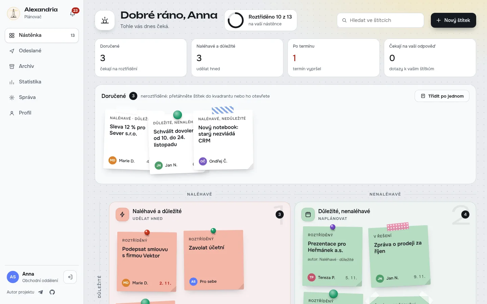
O co jde
Dřív zaměstnanci nechávali vedoucímu na stole papírky: „schvalte mi dovolenou“, „klient chce slevu“, „rozbil se mi notebook“. Papírky se ztrácely, odpovědi se zapomínaly a nikdo nevěděl, co už je vyřešené.
- Zaměstnanec napíše štítekStručně: co je potřeba a do kdy. Může připojit soubor a označit, jak je to naléhavé a důležité.
- Vedoucí třídíŠtítek přistane v Doručených na nástěnce. Vedoucí ho vloží do jednoho ze čtyř kvadrantů a začne ho řešit, doptá se, svěří ho někomu nebo rovnou rozhodne.
- Autor dostane odpověďRozhodnutí přijde do prohlížeče i do Telegramu. Autor potvrdí, že odpověď viděl, a štítek odejde do archivu.
Vše probíhá v prohlížeči, na počítači i v telefonu. Program běží na serveru vaší firmy: data nikam neodcházejí a autor projektu je nevidí.
Eisenhowerova matice
Každý štítek se posuzuje podle dvou otázek: je to naléhavé a je to důležité? Vzniknou čtyři kvadranty, každý má svou barvu a tu uvidíte v programu všude.
Naléhavé a důležité
Hoří a ovlivňuje výsledek. Například smlouva s klientem, kterou je třeba podepsat dnes.
Důležité, nenaléhavé
Ovlivňuje výsledek, ale je čas. Měsíční zpráva, školení, plány.
Naléhavé, nedůležité
Musí to být rychle, ale nemusí to dělat vedoucí. Aktualizovat ceník, objednat vizitky.
Nenaléhavé, nedůležité
Může dlouho počkat nebo se dá odmítnout. Objednat vodu, koupit kávovar.
Kdo je kdo
Program má tři role. Jeden člověk může mít dvě: vedoucí malého týmu bývá často i administrátorem.
Zaměstnanec
Píše štítky vedoucímu nebo kolegům, odpovídá na dotazy, potvrzuje rozhodnutí. Vidí jen své štítky a ty, které mu někdo zpřístupnil.
Vedoucí
Dostává štítky týmu na nástěnku, třídí je do kvadrantů, odpovídá, deleguje, sleduje statistiku a exportuje přehled do Excelu.
Administrátor
Zakládá lidi a týmy, obnovuje hesla, připojuje Telegram bota a řídí aktualizace. Vidí záznam přihlášení.
Přihlášení a zabezpečení
Přihlašovací jméno a dočasné heslo vám dá administrátor. Přihlašovací jméno obvykle tvoří první písmeno jména a příjmení: j.novak.
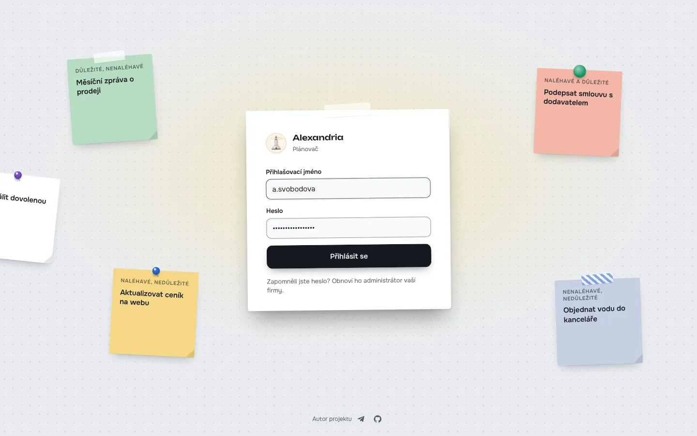
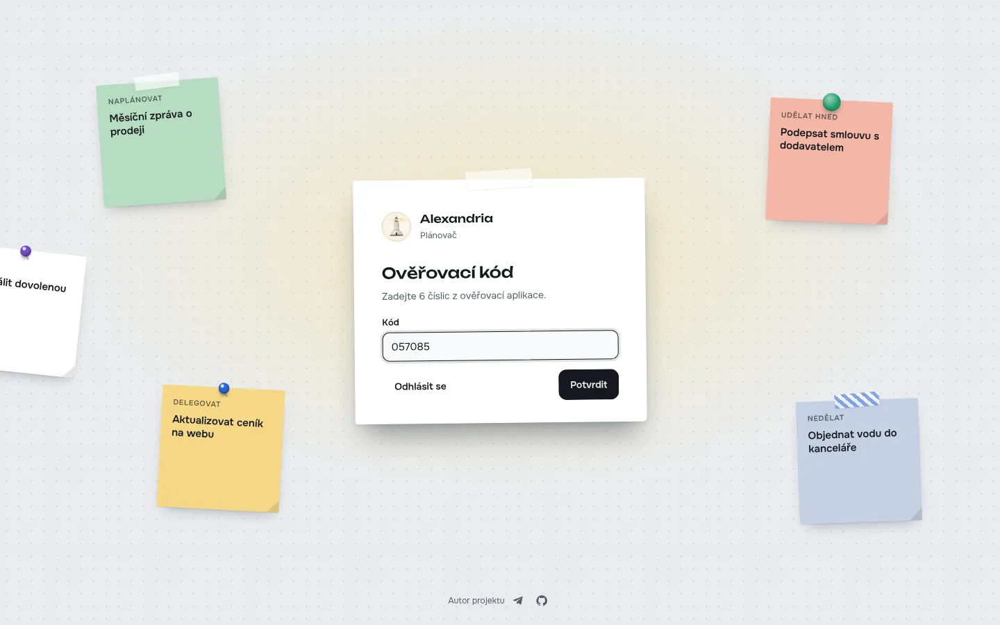
Dvoufázové ověření (2FA)
Pro vedoucí a administrátory je povinné: při prvním přihlášení program ukáže QR kód. Nainstalujte si do telefonu Google Authenticator, Microsoft Authenticator nebo podobnou aplikaci, naskenujte kód a zadejte 6 číslic. Pak program při každém přihlášení požádá o nový kód z aplikace.
Pro zaměstnance
jak se zeptat a dostat odpověďPoslat štítek
Klikněte na „Nový štítek“ v pravém horním rohu kterékoli stránky. Otevře se krátký formulář.
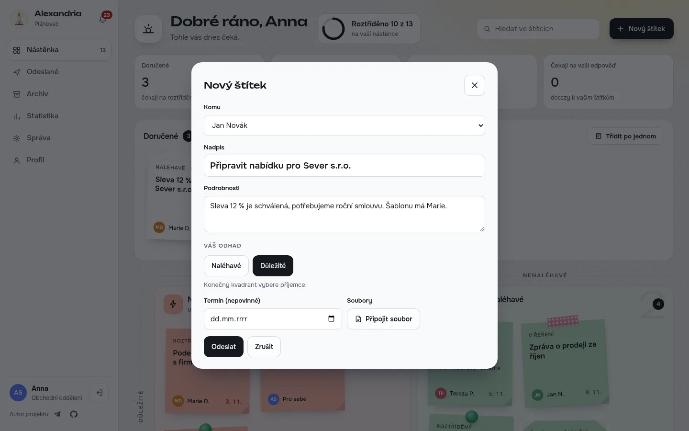
1234- KomuVe výchozím stavu váš vedoucí. Můžete vybrat kolegu nebo „Pro sebe (osobní štítek)“: ten vidíte jen vy, hodí se jako připomínka.
- Nadpis a podrobnostiNadpis na jeden řádek: o co jde. Do podrobností patří detaily a termín.
- Váš odhadStiskněte „Naléhavé“ a/nebo „Důležité“, pokud to tak je. Je to nápověda pro vedoucího, konečný kvadrant vybere on.
- Termín a souboryPotřebujete-li odpověď k datu, nastavte termín: dva dny předem se štítek sám stane naléhavým. Soubory do 25 MB.
Sledovat odpověď
Oddíl „Odeslané“ ukazuje, co se děje s vašimi štítky. Leží ve sloupcích podle kroků.
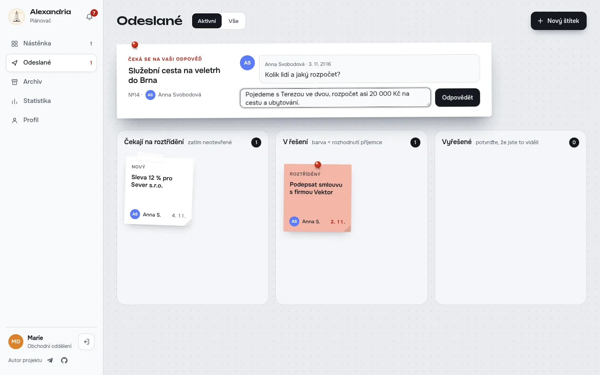
12345- Čeká se na vaši odpověďKdyž se vedoucí na něco ptá, dotaz se připne nahoru na stránku. Dokud neodpovíte, štítek čeká na vás.
- OdpovědětNapište odpověď přímo sem a stiskněte „Odpovědět“. Štítek se vrátí vedoucímu.
- Čekají na roztříděníVedoucí štítek ještě neotevřel.
- V řešeníŠtítek je roztříděný. Jeho barva ukazuje kvadrant, který zvolil vedoucí.
- VyřešenéJe tu odpověď. Otevřete štítek, přečtěte si rozhodnutí a stiskněte „Potvrdit převzetí“: štítek se uzavře a odejde do archivu. Pokud odpověď nesedí, stiskněte „Znovu otevřít“ a vysvětlete proč.
Pro vedoucí
třídění doručených a odpovědiNástěnka
Hlavní obrazovka vedoucího. Nahoře přehled dne, pod ním Doručené a matice se čtyřmi kvadranty.
- ZvonekNové události: štítky, odpovědi, zprávy řešitelů. Číslo ukazuje nepřečtené.
- Kruh postupuKolik štítků na nástěnce je už roztříděno. Cíl na den: prázdné Doručené.
- Hledání a nový štítekHledání podle nadpisu, textu a čísla. Vedoucí může také psát štítky: sobě, zaměstnanci nebo svému vedoucímu.
- PřehledKolik čeká na roztřídění, kolik je naléhavých, co je po termínu a kolik vašich štítků čeká na vaši odpověď.
- DoručenéNové, ještě neroztříděné štítky. Přetáhněte štítek myší (v telefonu prstem) do kvadrantu nebo na něj klikněte a otevřete ho.
- KvadrantyRoztříděné štítky. Mezi kvadranty je můžete kdykoli přesouvat. Červené datum znamená, že termín vypršel.
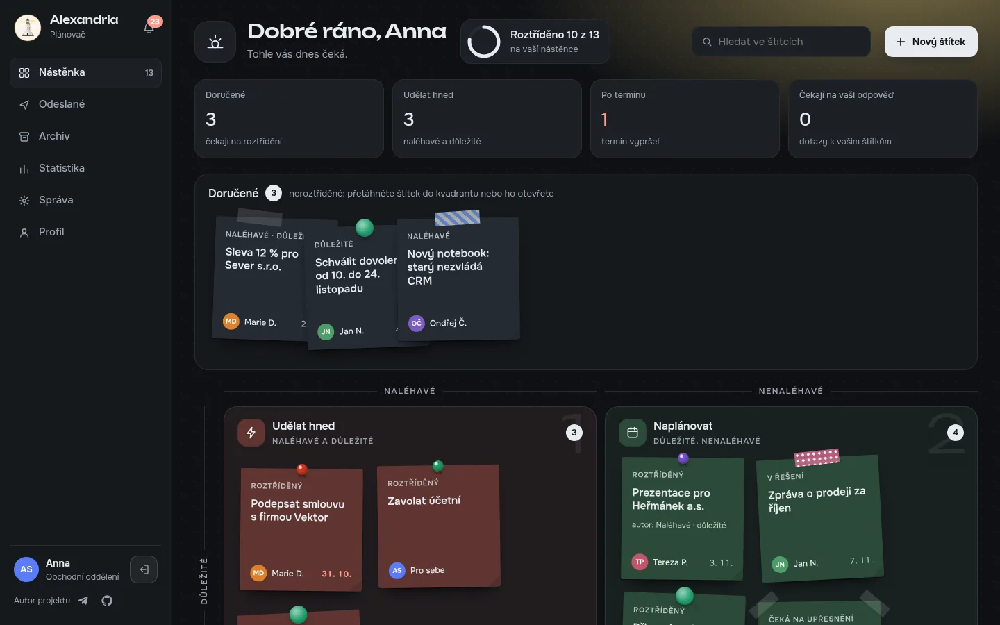
Třídit po jednom
Když je v doručených hodně štítků, stiskněte „Třídit po jednom“. Štítky se otevírají po jednom: klávesy 1–4 zařadí štítek do kvadrantu, Enter otevře kartu, → přeskočí, ← vrátí zpět, Esc zavře. Kvadrant navržený autorem je zvýrazněn.
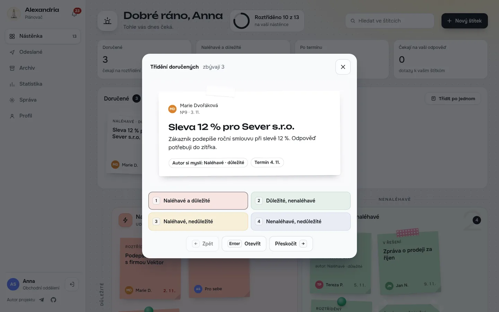
Karta štítku
Klikněte na libovolný štítek a otevře se jeho karta. Vlevo text a konverzace, vpravo vše, co se štítkem můžete udělat.
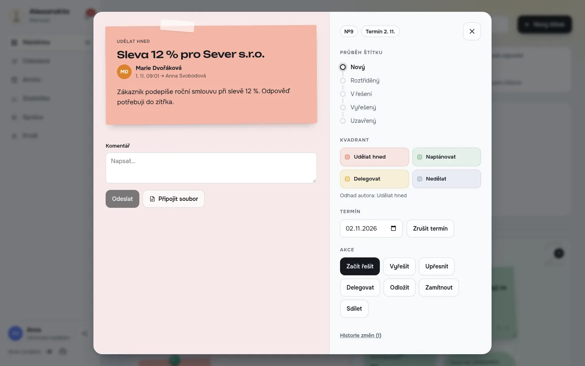
12345- Komentář a souboryKonverzace ke štítku. Autor komentář uvidí hned.
- Průběh štítkuKde štítek právě je: nový, roztříděný, v řešení, vyřešený, uzavřený.
- KvadrantKlikněte na kvadrant a štítek se tam přesune. Níže je vidět, jak ho odhadl autor.
- TermínLze nastavit, změnit nebo zrušit.
- AkceTlačítka závisí na stavu štítku a vaší roli. Podrobněji v dalším oddílu.
Vpravo dole „Historie změn“: kdo, kdy a co na štítku měnil.
Rozhodnutí a další akce
Chcete-li autorovi odpovědět, stiskněte „Vyřešit“, vyberte výsledek a napište pár slov. Odpověď hned odejde autorovi.
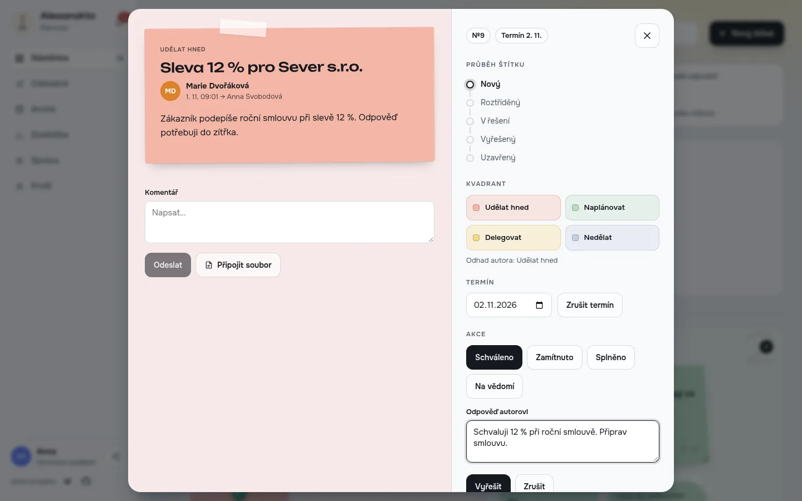
Výsledky
| Schváleno | Ano, souhlasím. |
| Zamítnuto | Ne, s vysvětlením. |
| Splněno | Hotovo: přístup zřízen, dokument podepsán. |
| Na vědomí | Vzato na vědomí, není třeba nic dělat. |
Všechny akce
| Tlačítko | Co se stane |
|---|---|
| Začít řešit | Štítku se věnujete. Autor vidí stav „V řešení“. |
| Upřesnit | Položit autorovi dotaz. Štítek čeká na odpověď a autorovi se dotaz připne v „Odeslaných“. |
| Delegovat | Svěřit zaměstnanci. Štítek se objeví na jeho nástěnce, řešitel podá zprávu tlačítkem „Podat zprávu“ a vy práci převezmete, nebo ji vrátíte tlačítkem „Vrátit k přepracování“. |
| Odložit | Sundat z nástěnky do zítřka, na týden nebo do data. V daný den se štítek vrátí sám. |
| Zamítnout | Odmítnout bez řešení a uvést důvod. |
| Sdílet | Ukázat štítek kolegovi, třeba zástupci. Uvidí ho ve svých „Odeslaných“. |
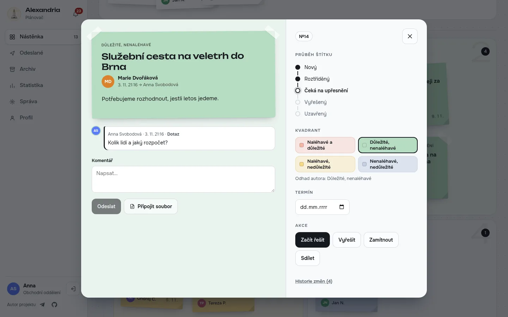
Archiv
Uzavřené, zamítnuté a stažené štítky se ukládají do archivu po měsících. Na každém je razítko s výsledkem.
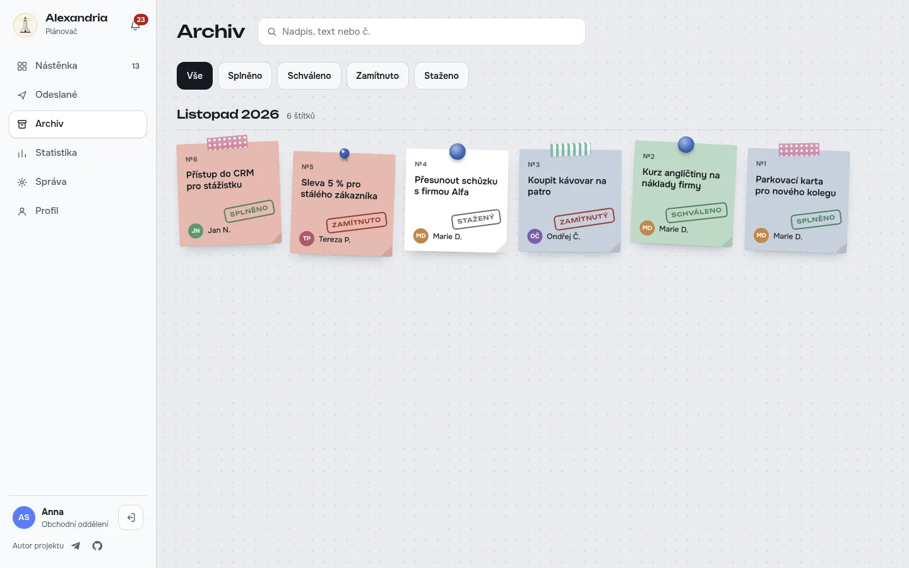
Statistika a Excel
Kolik dotazů přichází, jak rychle odpovídáte a kdo ze zaměstnanců vidí priority jinak než vy.
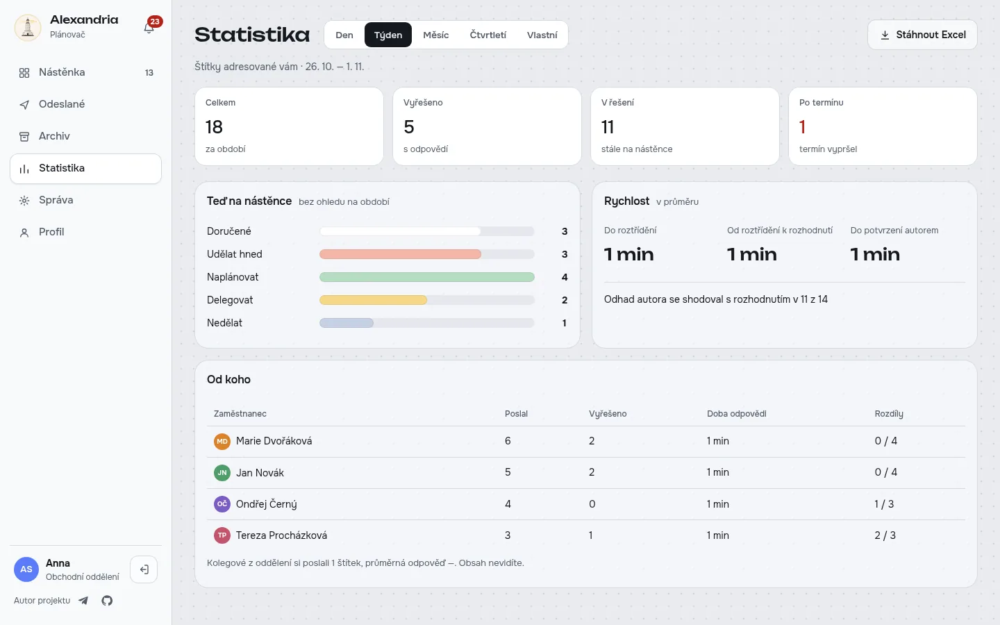
12345- ObdobíDen, týden, měsíc, čtvrtletí nebo vlastní data.
- Stáhnout ExcelPřehled za zvolené období na třech listech: „Přehled“, „Štítky“ a „Podle lidí“. Hodí se jako příloha zprávy pro nadřízeného.
- Souhrn obdobíKolik přišlo, kolik je vyřešeno, kolik zbývá a co je po termínu.
- RychlostPrůměrná doba do roztřídění, do rozhodnutí a do potvrzení autorem. Níže: jak často se odhad autora shodl s vaším rozhodnutím.
- Od kohoU každého zaměstnance: kolik poslal, kolik je vyřešeno, doba odpovědi a rozdíly v odhadech.
Pro všechny
oznámení, profil, telefonOznámení
O novém štítku, dotazu nebo rozhodnutí se dozvíte třemi způsoby.
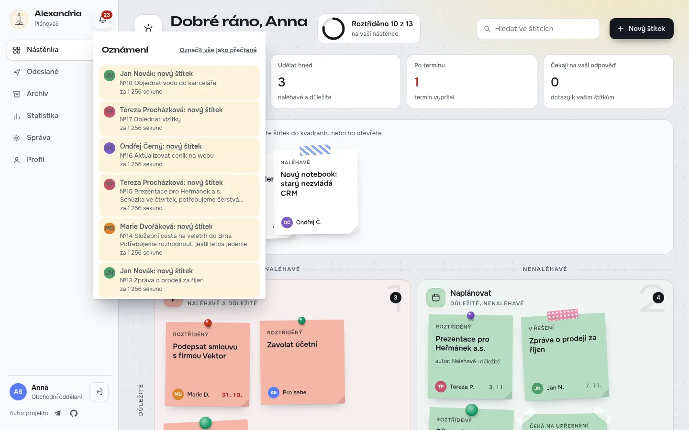
- ZvonekFunguje vždy, dokud je stránka otevřená. Kliknutím na událost otevřete štítek.
- Oznámení prohlížečeChodí, i když je karta zavřená. Zapínají se v „Profil → Oznámení“ na každém zařízení zvlášť. Je potřeba zabezpečená adresa (https).
- TelegramPokud administrátor připojil bota: „Profil → Telegram → Propojit“, pak „Start“ v botovi. V Telegramu můžete odpovídat tlačítky a vytvářet štítky.
Přehledy
Ranní přehled chodí v pracovní dny ve zvolený čas: co vás dnes čeká, co je naléhavé, termíny a dotazy na vás. Večerní shrnutí přijde v 18:00. Obojí se nastavuje v profilu.
Profil
Osobní nastavení. Vše se ukládá hned, tlačítko „Uložit“ není potřeba.
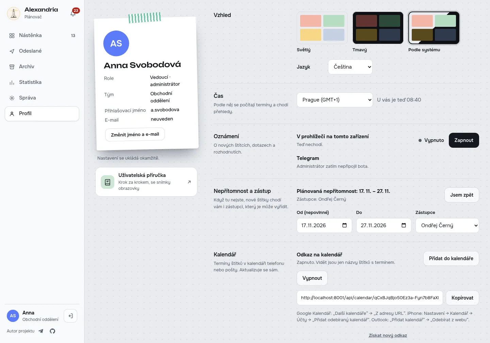
| Vzhled | Světlý, tmavý nebo podle systému. Jazyk rozhraní: jeden ze sedmi. |
| Čas | Časové pásmo. Podle něj se počítají termíny a chodí přehledy. |
| Oznámení | Prohlížeč na tomto zařízení a Telegram. |
| Přehledy | Ranní (čas a dny) a večerní shrnutí. |
| Zabezpečení | Změna hesla (ostatní relace se ukončí) a dvoufázové ověření. |
Nepřítomnost a zástup
V části „Nepřítomnost a zástup“ zadejte data a zástupce. Když tu nejste, nové štítky pro vás chodí i zástupci, který je může vyřídit. Je to vidět v historii štítku a autor při psaní uvidí „Pryč do …“. Tlačítko „Jsem zpět“ nepřítomnost zruší.
Kalendář
„Kalendář → Zapnout“ vytvoří osobní odkaz s termíny vašich štítků. Přidejte ho do Google Kalendáře („Další kalendáře → Z adresy URL“), na iPhone („Nastavení → Kalendář → Účty → Přidat odebíraný kalendář“) nebo do Outlooku. Vidět jsou jen názvy. Pokud se odkaz dostal k nesprávným lidem, stiskněte „Získat nový odkaz“: starý přestane fungovat.
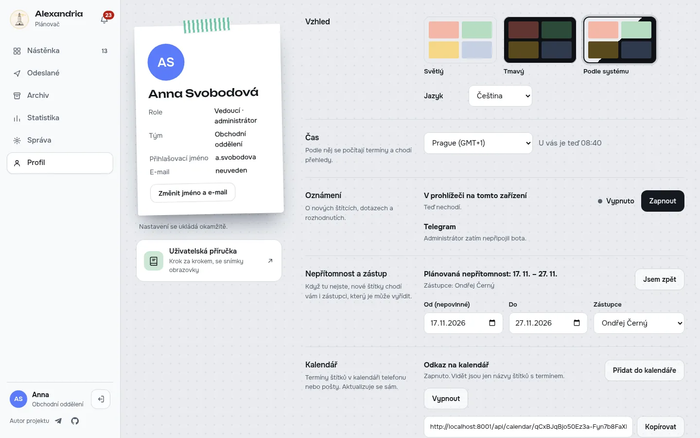
V telefonu
Samostatná aplikace není potřeba: otevřete adresu Plánovače v prohlížeči telefonu. Vše funguje stejně, štítky se dají přetahovat prstem.
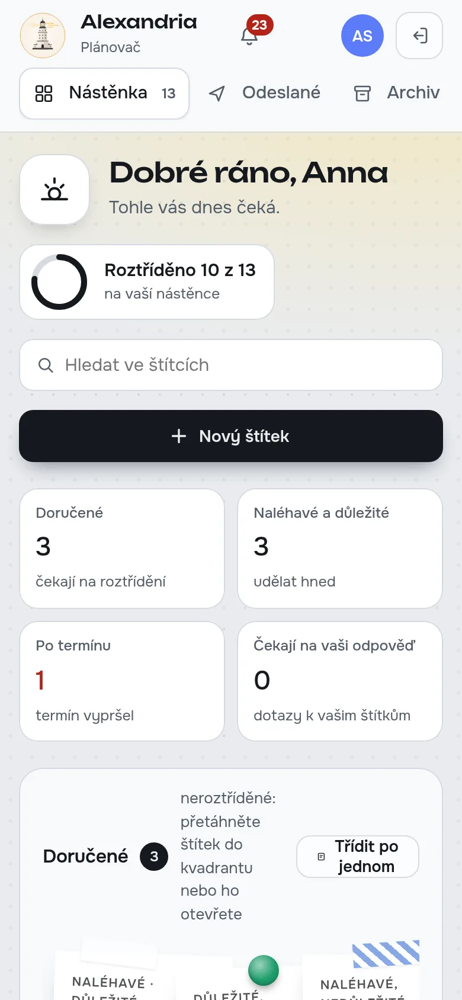
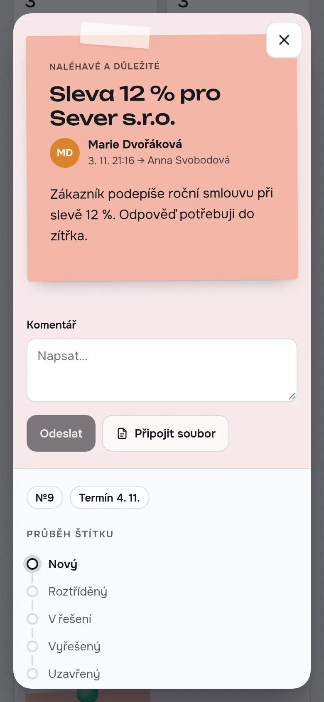
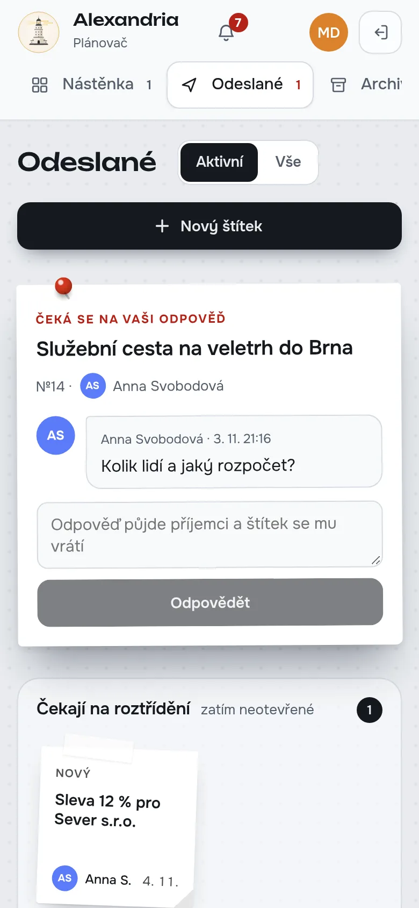
Pro administrátory
instalace a nastaveníPrvní spuštění
Hned po instalaci program nabídne vytvořit administrátora. Výchozí hesla neexistují: tento účet je jediná cesta dovnitř.
Nejdřív se průvodce zeptá, jak budete Plánovač používat: jako tým (lidé píší vedoucímu, vedoucí třídí) nebo jen já, jako osobní diář v Eisenhowerově matici. V diáři jsou všechny štítky osobní a jdou rovnou do kvadrantu: žádné doručené, odeslané, statistiky ani uživatelé.
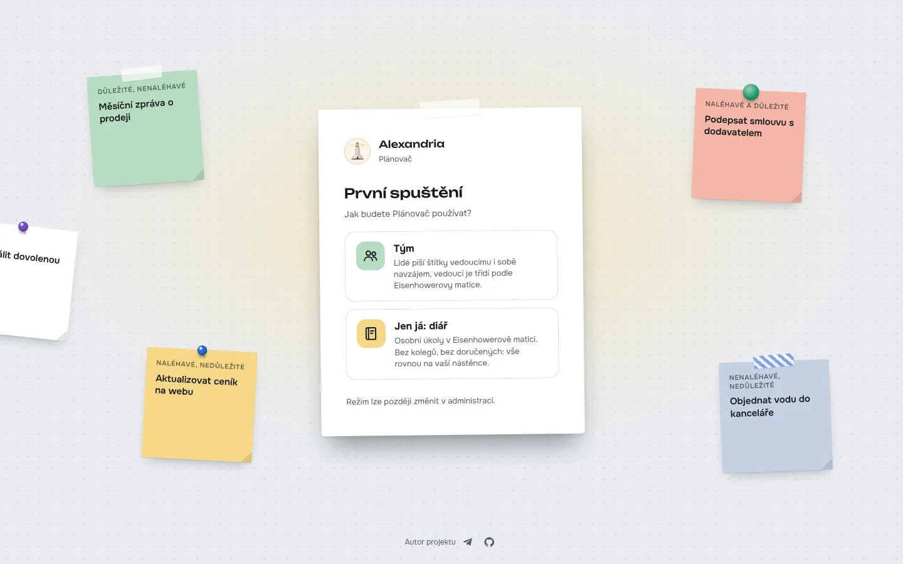
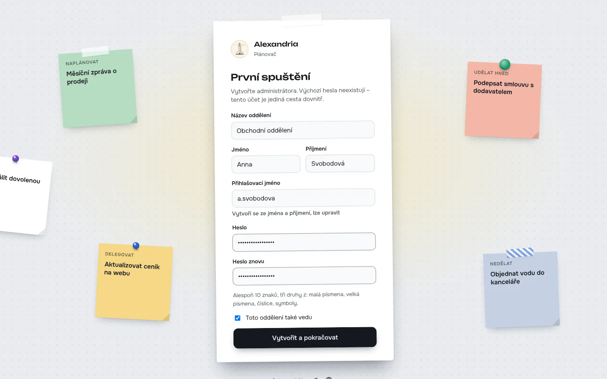
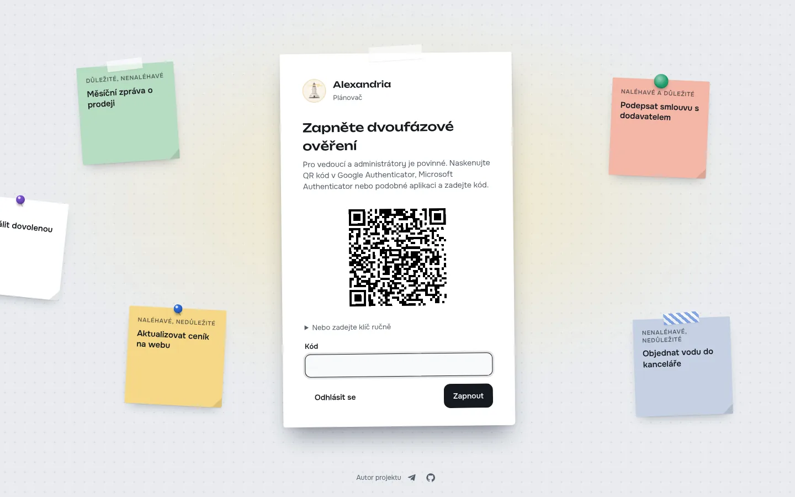
- Název týmu, jméno a příjmeníPřihlašovací jméno se sestaví ze jména a příjmení, dá se upravit.
- HesloAlespoň 10 znaků, tři druhy ze čtyř: malá písmena, velká písmena, číslice, symboly.
- „Tento tým také vedu“Nechte zaškrtnuté, pokud štítky třídíte vy. Pokud ne, zrušte zaškrtnutí a vedoucího určete později v „Týmech“.
- 2FANaskenujte QR kód aplikací v telefonu a zadejte kód. Potom se otevře prázdná nástěnka.
Lidé a týmy
Oddíl „Správa“. Zaměstnanci se neregistrují sami: zakládá je administrátor.
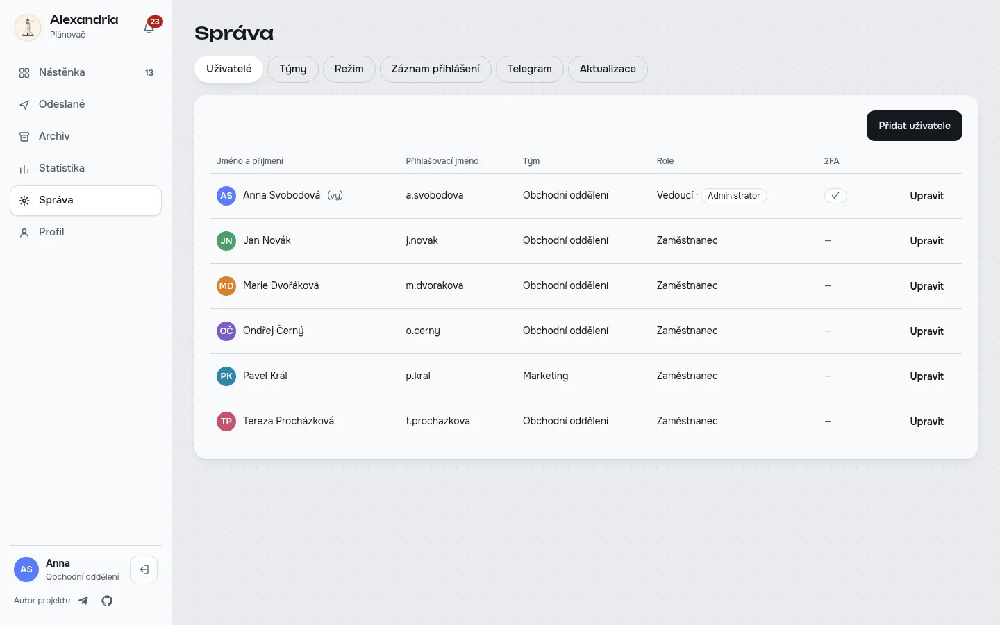
- Přidat uživateleJméno, příjmení, tým, role a dočasné heslo. Přihlašovací jméno se doplní samo. Předejte člověku přihlašovací jméno, heslo a odkaz na tuto příručku.
- UpravitNové heslo, jiný tým nebo role, reset 2FA, deaktivace odešlého zaměstnance. Jeho štítky zůstanou zachovány.
- TýmyNázev a vedoucí. Štítky zaměstnance jdou ve výchozím stavu vedoucímu jeho týmu.
- Záznam přihlášeníKdo, kdy a odkud se přihlásil, neúspěšné pokusy a blokace. Po 5 špatných heslech se přihlášení na 15 minut zablokuje.
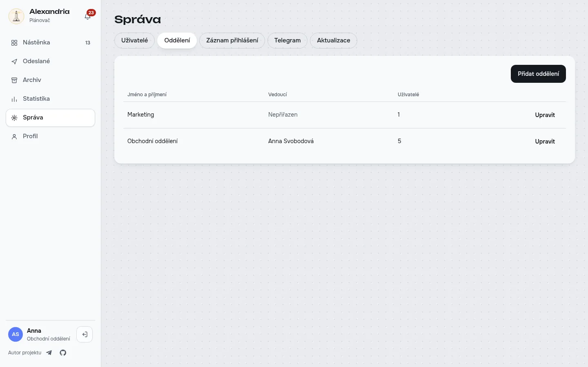
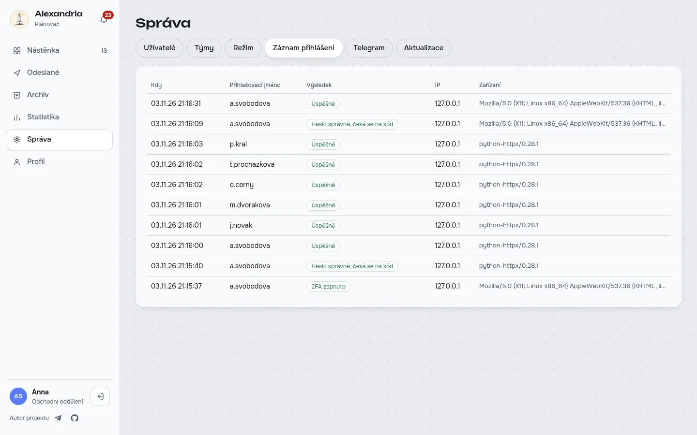
Režim
„Administrace → Režim“ ukazuje aktuální režim. Z diáře může vzniknout tým: zadejte název týmu, stanete se jeho vedoucím a můžete přidávat lidi; osobní štítky zůstanou vaše. Zpět na diář lze jen tehdy, když nejsou další aktivní uživatelé.
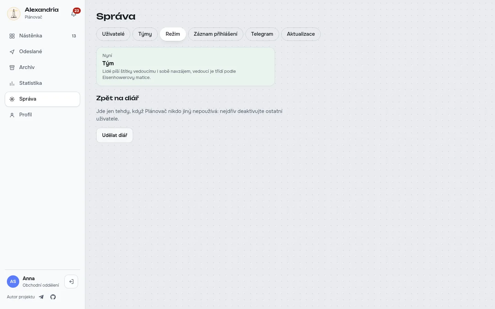
Telegram bot
Každá firma má vlastního bota: administrátor ho vytvoří za pár minut a zprávy jdou přímo mezi vaším serverem a Telegramem.
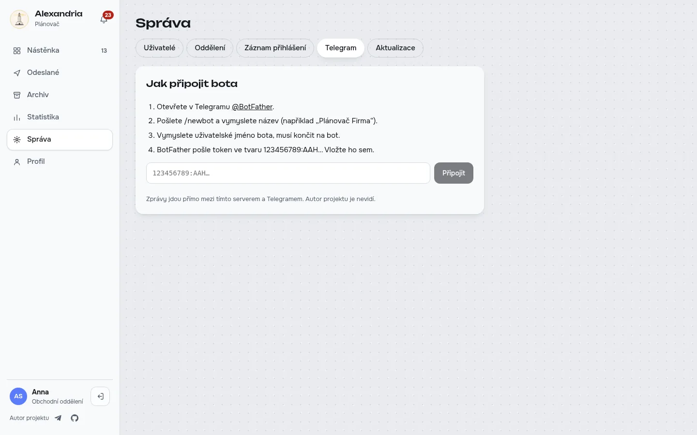
- Vytvořte botaV Telegramu otevřete @BotFather, pošlete /newbot a vymyslete název, třeba „Plánovač Firma“.
- Jméno botaMusí končit na bot, například planovac_firma_bot.
- TokenBotFather pošle token ve tvaru 123456789:AAH… Vložte ho a stiskněte „Připojit“.
- ZaměstnanciKaždý si propojí svůj Telegram v profilu. Bota můžete přidat do pracovního chatu a psát tam štítky příkazem /stiker text.
Aktualizace
Novou verzi můžete nejdřív dát několika lidem (beta) a ostatní nechat na ověřené (stable).
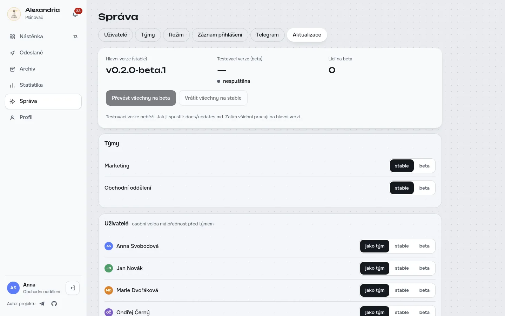
Přepínače má každý tým i každý člověk, osobní volba má přednost. Převod i návrat platí hned, bez výpadku: další požadavek člověka jde na zvolenou verzi. Pokud testovací verze spadne, její uživatelé automaticky pokračují na hlavní.
Časté dotazy
Štítek šel nesprávnému člověku. Co teď?
Dokud není roztříděný, otevřete ho v „Odeslaných“ a stiskněte „Stáhnout“, pak vytvořte nový se správným příjemcem. Pokud už je v řešení, napište příjemci komentář v kartě.
Vidí vedoucí moje osobní štítky?
Ne. Štítek „Pro sebe“ vidíte jen vy. Štítky kolegům vidíte jen vy a příjemce; vedoucí ve statistice vidí pouze jejich počet.
Proč se štítek sám přesunul do „Naléhavé a důležité“?
Dva dny před termínem se štítek stane naléhavým. Kvadrant se změní, důležitost zůstane; v kartě je to označeno jako „Kvůli termínu se stal naléhavým“.
Nechodí oznámení v prohlížeči.
Zkontrolujte tři věci: adresa začíná https, prohlížeč webu oznámení povolil a v „Profil → Oznámení“ jsou na tomto zařízení zapnutá. Tlačítko „Vyzkoušet“ pošle testovací oznámení.
Po špatných heslech mě to zablokovalo.
Počkejte 15 minut nebo požádejte administrátora o nové heslo.
Zaměstnanec odešel. Mám ho smazat?
Není třeba: deaktivujte ho v „Uživatelé → Upravit → Aktivní“. Přihlásit se nebude moct, historie štítků a statistika zůstanou.
V jakých jazycích program funguje?
Rusky, anglicky, německy, česky, bělorusky, kazašsky a gruzínsky. Jazyk se přepíná v „Profil → Vzhled“, každý si ho volí sám. Oznámení, Telegram bot i přehled v Excelu přicházejí ve zvoleném jazyce.
Autor projektu
Alexandria Plánovač je otevřený projekt. Pokud jste našli chybu, máte nápad nebo potřebujete pomoc s instalací, napište na Telegram nebo založte issue na GitHubu.